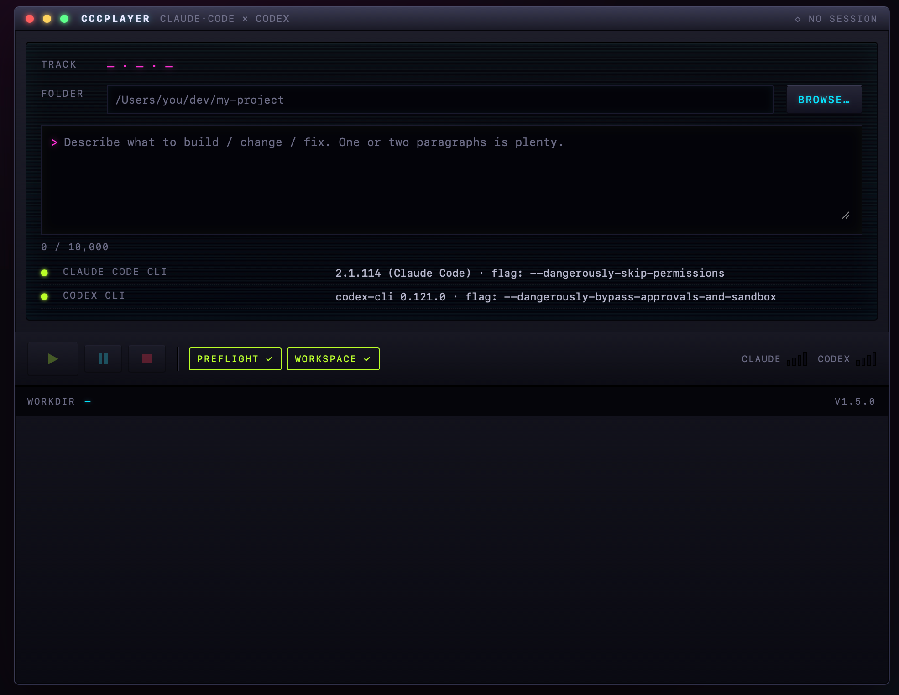
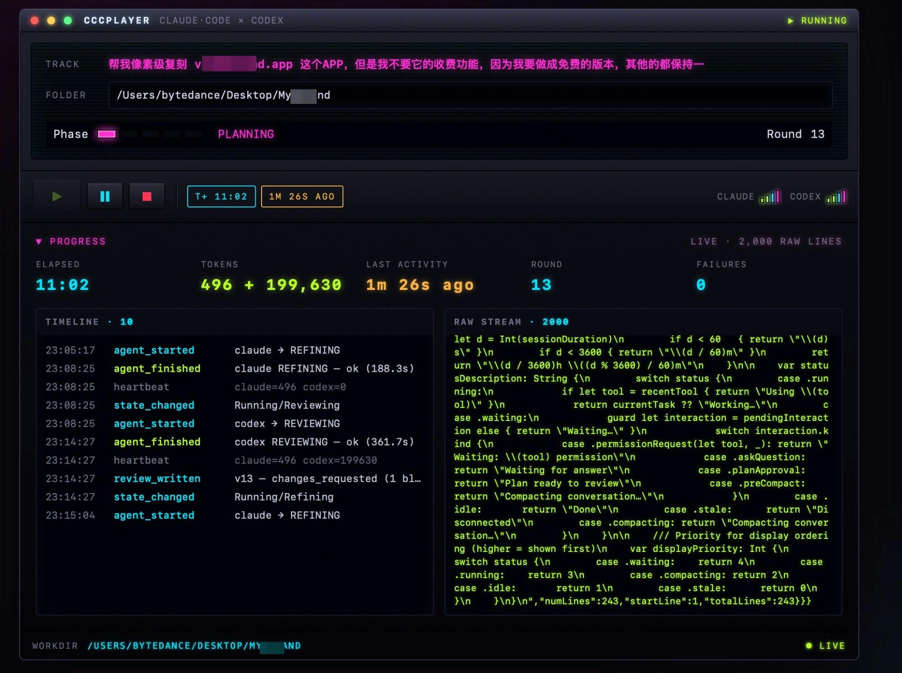
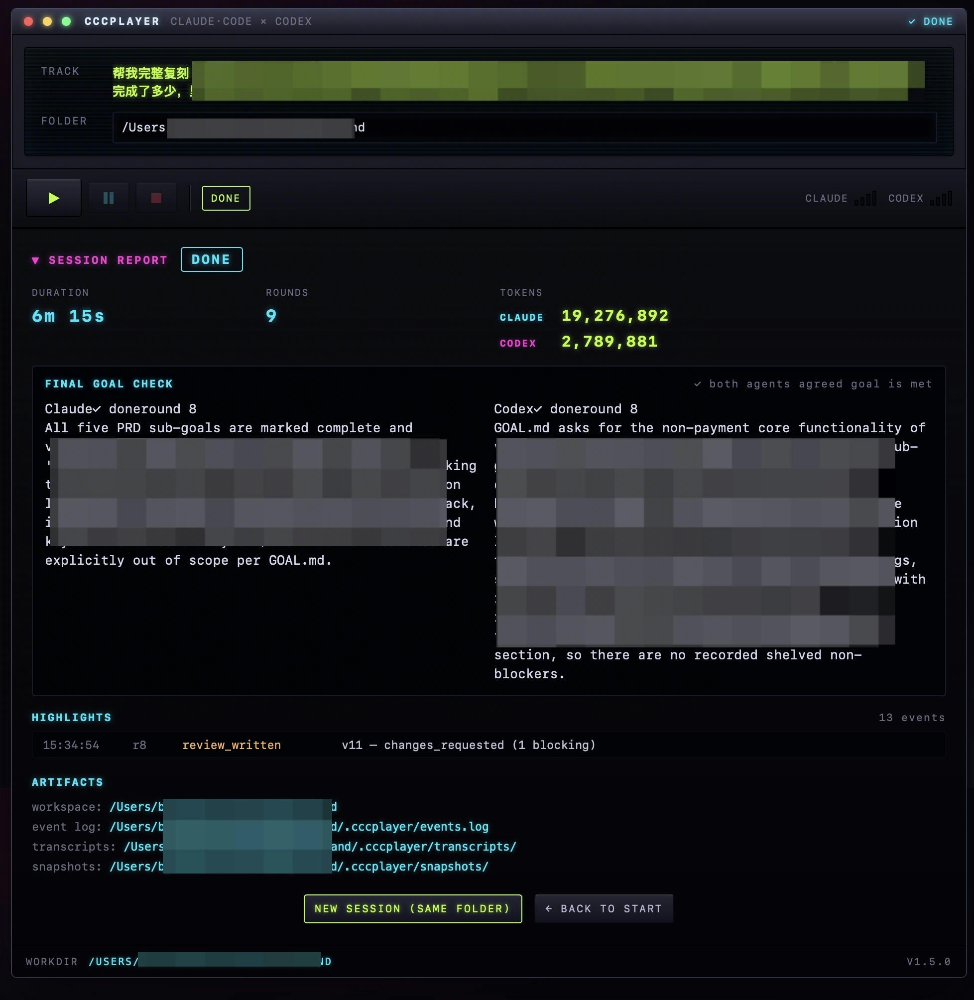

Burn compute, not your time.
A macOS desktop app that hands a local folder to two AI coding agents and
walks away until the work is done. Claude plans and implements, Codex
reviews. They iterate over a shared PRD.md and versioned
codex_review_v{N}.md files until both agree the goal is met.
Everything runs locally. Your tokens, your code, your machine.

The name is a nod to Winamp: this is a player for code agents. Triangle ▶ Play, double-bar ⏸ Pause, square ■ Stop. Set a local folder, describe a goal in plain English, press Play, walk away.
Set a goal. One or two paragraphs in plain English — e.g. "pixel-perfect clone of some.app, but drop the paid features" or "add CSV import and round out integration tests".
Press ▶. The Claude Code CLI plans
and implements against the current state of your folder; the
Codex CLI reviews the result and writes
codex_review_v{N}.md.
Walk away. Close the window — the loop keeps running in the background. Hit Cmd+Q to actually exit. CCCPlayer iterates Plan → Implement → Review → Refine → GoalCheck until both agents agree the goal is met.
Features that are load-bearing for unsupervised long runs — the ones you notice when you leave a session overnight and come back to a green DONE banner.
Every transition flows through a single Tokio reducer. The UI never
sees torn state; the two agents never race each other. Phase LEDs
march from PLANNING to GOAL_CHECK.
Your goal is locked; agents literally cannot edit it. Everything else — PRD milestones, sub-goals, past decisions — is revisable evidence. Every phase anchors back to GOAL.md.
When Claude and Codex disagree, the refiner resolves it explicitly
with a goal_impact line. Shelved items live verbatim in
PRD so agent forgetfulness can't drop them silently.
Planning extracts the goal's concrete required outputs into
## Hard deliverables. Shelving one is forbidden;
if the orchestrator finds one in missing[]/shelved[] at goal-check,
done=true is overridden. No rationalized DONE.
Quota exhausted → pause with retry_at, resume when the
window rolls over. Stuck for 5 rounds with no new angle from either
agent → stop cleanly with a plain-English reason.
Every round start writes .cccplayer/snapshots/round-N.tar.zst.
round-00 is your untouched original and is never
deleted. Any session is rewindable to any round.
Homebrew, nvm, fnm, asdf, volta, n, cargo-bin. Falls
back to a 5-second login-shell probe so whatever PATH your Terminal
sees, CCCPlayer sees too. Finder-launched apps still work.
DONE / STOPPED / ERRORED with duration, rounds, per-agent tokens, both agents' final goal checks side-by-side, plain-English exit reason, chronological highlights, artifact paths.
The app itself makes zero network calls. Everything uses your own Claude + Codex accounts, your own tokens, your own workdir. Not a proxy, not a service.
Empty directory or an existing project — both work. CCCPlayer surveys
what's there and builds on top, never wipes. Home dir and system
paths are refused; .cccplayer/ is auto-added to
.gitignore.
One or two paragraphs in plain English. If the folder already has
GOAL.md, CCCPlayer loads it so you can see it and edit
on top. Both preflight rows green? Hit the lime ▶ Play button.
Close ≠ quit — the loop keeps running in the background. App Nap is suppressed so hidden windows don't get throttled. Come back later, look at the DONE banner, rewind to any round if you want to branch.
Cyberpunk neon on near-black chrome. Cyan/magenta/lime color-coded so you can glance from 20 feet away and know which agent is working and whether the session is stuck.


Not notarized — no paid Apple Developer account behind the release. First
launch triggers Gatekeeper; install.command handles the
xattr -cr for you. Intel builds: build from source (see README).
Unzip, right-click install.command → Open (clears the
Gatekeeper warning on first run). Script copies to
/Applications and launches.
Traditional macOS install: mount DMG, drag into
/Applications, then xattr -cr
/Applications/CCCPlayer.app in Terminal before first open.
Just the .app bundle — for developers, CI, and anyone
who wants to script the install.
You need the Claude Code CLI and Codex CLI both installed and logged in inside your Terminal. CCCPlayer uses YOUR accounts — it's a harness, not a proxy.
# Claude Code CLI (Anthropic) # Install per https://docs.anthropic.com/en/docs/claude-code claude --version # Codex CLI (OpenAI, via npm) npm i -g @openai/codex codex --version codex login